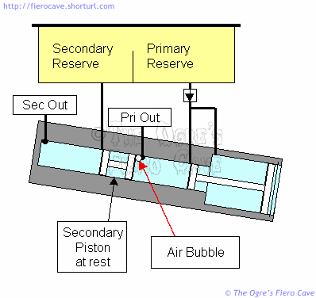
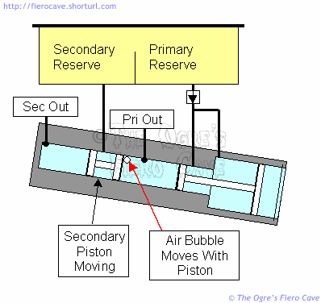
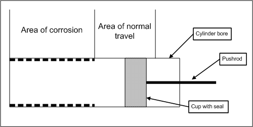
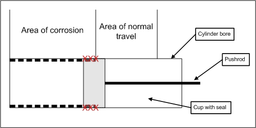

Go Home
Site Map
Go Home
Site Map
Why is bleeding the MC such a pain?
As previously mentioned the Fiero MC is mounted on an angle. The angle creates a pocket in the MC that wants to hold on to air bubbles. The pocket forms between the Primary outlet and the rear of the secondary piston. (There may be another such pocket near the secondary outlet.)
Here are a couple drawings to show you the problem. I've drawn a large bubble just so you can see it better. In reality, the bubble(s) will be very small, likely no more than 1mm in size.
In our first drawing, we see the MC at rest with a small air bubble in the Primary chamber. The bubble cannot rise into the Primary outlet because the tilt of the MC creates a high spot above the outlet.

If we try to bleed the bubble out of the MC by pushing the pedal, it often just moves along the bore behind the Secondary piston as shown in the next drawing.

There are only a few ways to get that bubble out.
- Park the car nose down or jack the rear of the car until the MC is level or close enough to expel the air. This can be very dangerous. If you do this, make certain the car can't fall off the jacks.
- Remove the MC and bench bleed it. Leave the bleeder setup on the MC until you are ready to put the lines on. (Carry the MC to the car with the tank cover on and the bleed lines pinched shut.)
- You may have luck with a vacuum or pressure bleeder. Either one can flow enough volume through the MC that it might dislodge the bubble. You may still have to jack the back of the car.
Now you can see why it is such a huge pain if you allow the MC to run dry. It's annoying enough with a level MC mount but you could do allot of screaming with these tipped jobs.
Another area that can trap air and be difficult to clear is the section of line between the MC and the balance block. Air trapped here is best removed by moving the fluid at enough volume to carry it down the lines. This is easiest with either a pressure or vacuum bleeder set.
If you have allot of air in those short lines loosen their fittings on the balance block so you can bleed out as much air as you can. This will prevent hard to extract bubbles in the balance and make the whole job go faster in many cases.

Why "Pedal Bleeding" is bad for MC
From firejo24 in PFF...
You have to be very careful when bleeding the brakes with the master cylinder. Over time the master cylinder builds up a layer of corrosion in the bore where the seals don't ride and if when you bleed the brakes you push the pedal all the way down you push the seal past the corrosion and damage the seal. The drawing is crude but it illustrates the point. When you push the brake pedal now, even with air in it you should be able to pump it up and get a firm pedal. If every time you try to pump it up and hold it, it goes down or won't pump up you probably have a bad master cylinder. To see if there is air in the lines fill the MC and crack a bleeder and let it gravity bleed being careful not to let the MC run out of fluid. If you do this for both sides you should be able to get most of the air out of it.

